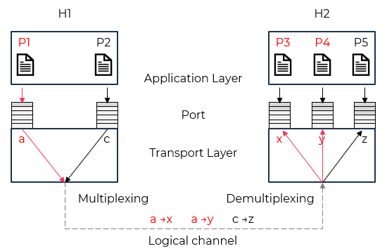
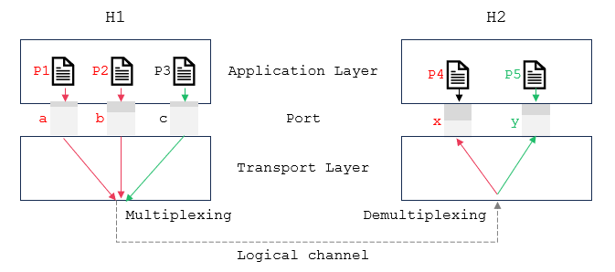
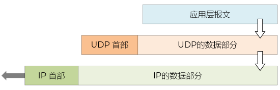
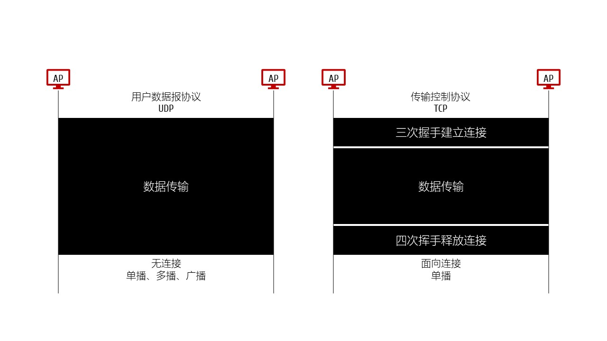

用户数据报
@UDP- Joke Time
- I know this great UDP joke but you might not get it.
- 概述 Overview
- 用户数据报 UDP - User Datagram Protocol
- 不可靠 unreliable
不保证交付 Does not guarantee delivery
无需确认
无连接 connectionless
没有拥塞控制
存在丢包
- 首部开销小
最少8个字节，仅包括首部
- 最大努力交付 Best effort delivery
- 支持单播、组播、多播
- 报文 Packet
- 面向报文
一次传送和交付一个完整的报文
不分段 segmenting
不重组 reassembling
不实现序列号 sequence numbers
一次只能传输少量数据
流媒体通信/实时通信
- 选择合适大小的报文
若报文太长，IP 层在传送时可能要进行分片，降低 IP 层的效率
若报文太短，会使 IP 数据报的首部的相对长度太大，降低 IP 层的效率
- 报文格式 Format
- 包括首部和数据
- 首部 8byte - 开销小
源端口：源端口号。在需要对方回信时选用。不需要时可用全 0
目的端口：目的端口号。终点交付报文时必须使用
长度：UDP 用户数据报的长度，其最小值是 8（仅有首部）
检验和：检测 UDP 用户数据报在传输中是否有错。有错就丢弃
- 一个源端口 → 多个目的端
- 典型应用
Web 浏览器访问多个服务
视频直播推流
广播通知系统

一对多通信 - 多个源端口 → 一个目的端口
- 典型应用
多人聊天室/即时通讯
文件上传服务
在线游戏服务器
物联网设备上报数据

一对多通信 - Source Port
an optional field, when meaningful, it indicates the port of the sending process, and may be assumed to be the port to which a reply should be addressed in the absence of any other information.
If not used, a value of zero is inserted.
- Destination Port
has a meaning within the context of a particular internet destination address.
- Length is the length
in octets of this user datagram including this header and the data.
This means the minimum value of the length is eight.
- Checksum
the 16-bit one's complement of the one's complement sum of a pseudo header of information from the IP header, the UDP header, and the data, padded with zero octets at the end (if necessary) to make a multiple of two octets.
- 发送方
填上伪首部
全0填充校验和字段；全0填充数据部分
伪首部+首部+数据三部分采用二进制反码求和
求和结果填入校验和字段并发送UDP报文
注意：最高进位必须加进去
- 接收方
填上伪首部
伪首部+首部+数据三部分采用二进制反码求和
结果全为1则无差错；否则丢弃
- UDP vs TCP
- UDP只管发；TCP会控制整个通信过程
- UDP不会拆分报文；一个报文就是一个完整的消息；TCP会拆分成诺干字节，形成字节流
- UDP发送时无需缓存；TCP必须缓存才能发送，发多少取决于对方的接收窗口；只有被对方接收且确认过的报文才能移除缓存
简单方便；不可靠
| 2 | 2 | 2 | 2 | |
| 源端口 | 目标端口 | 长度 | 校验和 | 数据 |
| Header | Data | |||


